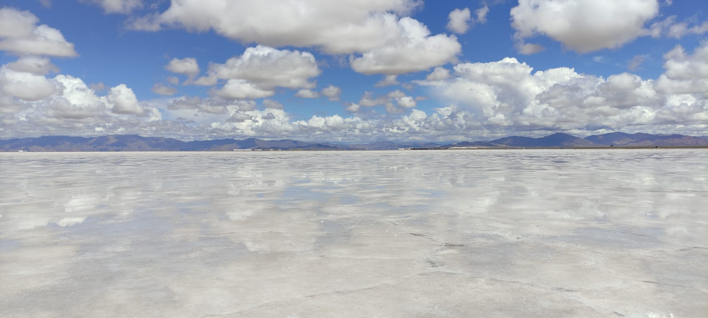
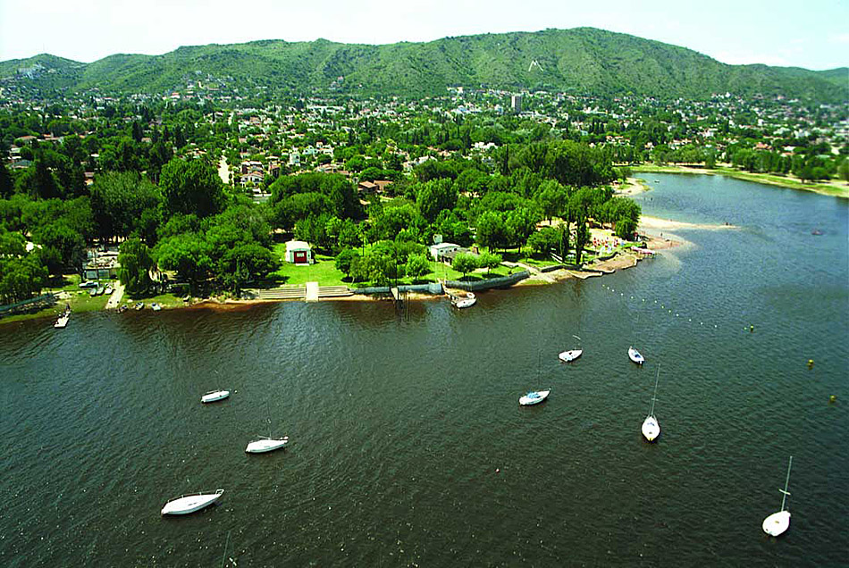
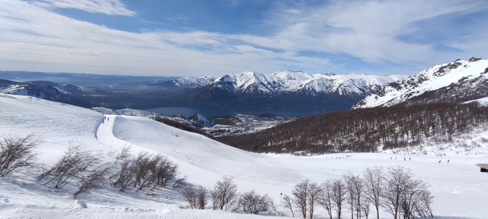

Viaje al Norte del pais
Esta aventura comienza en Salta donde vas a conocer todos los lugares turisticos de la provincia. Ademas, se incluirán excurciones a la provincia de Jujuy. Conoceras todo el encanto de los viñedos y la comida del norte Argentino.
Informacion


Destino cordoba
En esta aventura te hospedarás en Villa Carlos Paz y podras realizar excurciones a todos los centros turistivos de la provincia. Conoceras sus comidas, sus costumbres y su historia.
InformacionPatagonia Argentina
Esta aventura propone un recorrido por el camino de los 7 lagos, los cerros mas importantes de Bariloche, las mejores chocolaterias y los reconocidos restaurantes del lugar.
Informacion
